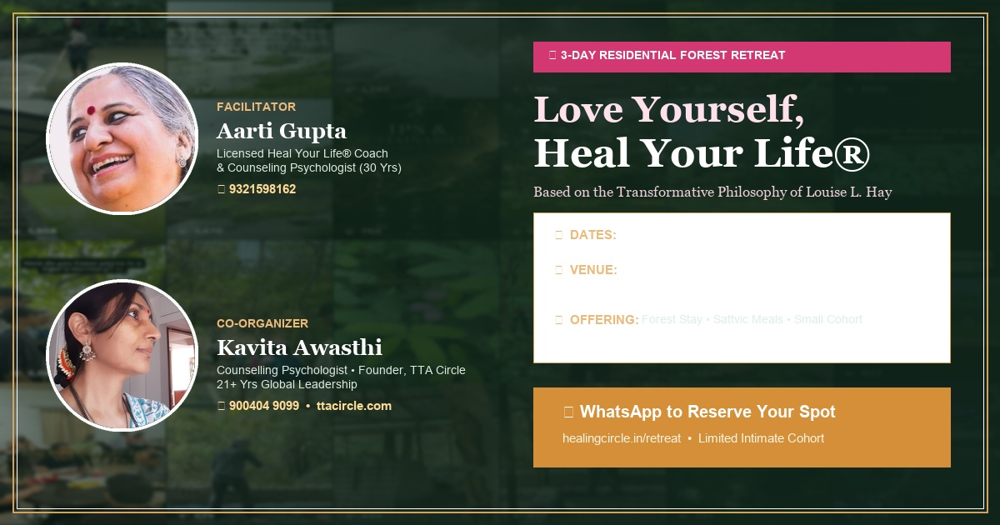
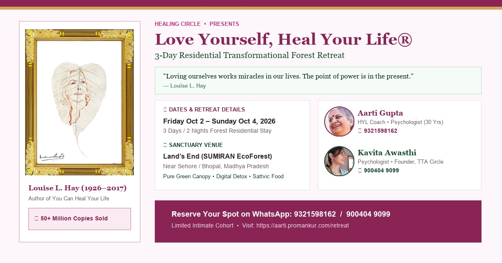
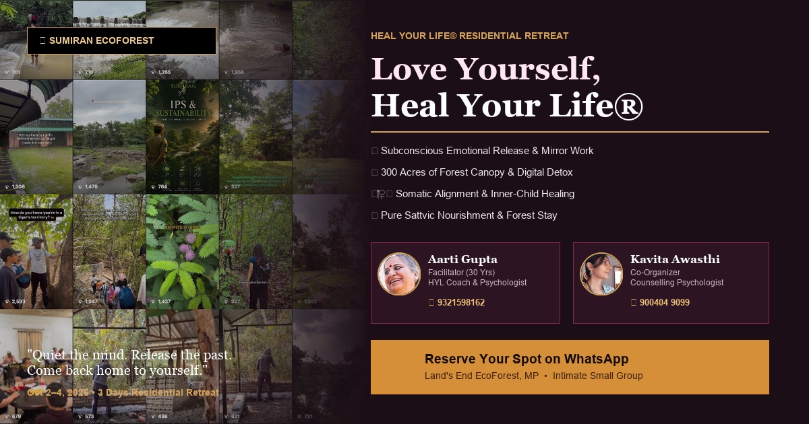
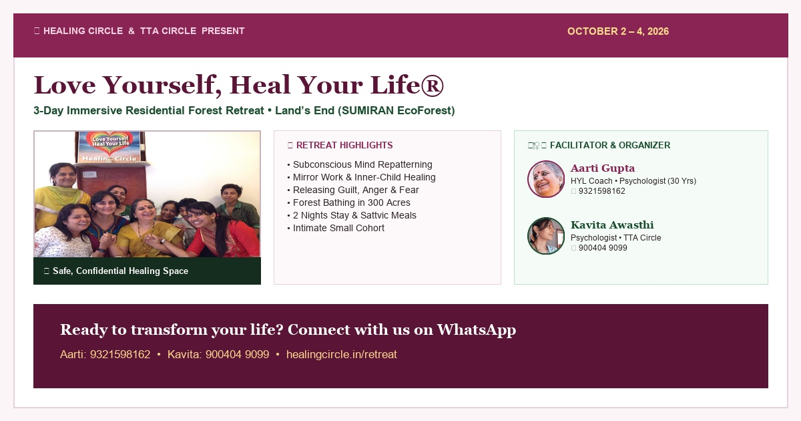

Atmosphere: Immersive forest greenery with dark emerald-plum aura, gold framing, and prominent circular portraits of both Aarti Gupta (Facilitator) and Kavita Awasthi (Co-Organizer • TTA Circle).

Atmosphere: Features the framed Louise Hay Peepal Leaf artwork with the 50+ Million Copies milestone, foundational quote, and structured details for both facilitators.

Atmosphere: High-end wellness magazine style with an asymmetric full-bleed forest canopy on the left and typographic pillar highlights on the right.

Atmosphere: Warm rose-cream layout with an authentic workshop circle photo moment, bulleted highlights, and dual-facilitator contact badge.
